目录
.
一、定义... 3
二、室内定位方法[3] 3
（1）几何法... 3
（2）近似法... 4
（3）场景分析法... 4
三、室内定位技术... 5
(一)局域室内定位技术... 5
（1）WIFI技术... 5
（2）紫蜂(ZigBee)技术... 6
（3）蓝牙技术（Bluetooth）... 6
（4）射频识别技术（RFID，radio-frequency identification）... 7
（5）超宽带定位技术（UWB，ultra-wide band）... 8
（6）惯性单元(IMU)的辅助定位技术... 8
（7）超声波定位技术(ultrasound). 9
（8）红外线室内定位技术(IR，infrared). 10
（9）LED可见光技术... 11
（10）地磁定位技术... 12
（11）视觉定位SLAM.. 12
(二)广域室内定位技术... 15
（1）辅助GNSS A-GNSS技术... 15
（2）伪卫星技术... 15
（3）导航通信一体化定位技术... 16
四、 室内定位系统... 17
五、 研究意义... 19
六、 国内外研究现状... 19
（1）国内研究现状：... 20
（2）国外研究现状：... 20
七、 室内定位面临挑战... 21
八、 室内定位发展趋势[99] 23
九、 参考文献... 25
一、 定义
室内定位技术[2]是指一种利用无线移动通信网络，通过对接收到的无线电波的一些参数进行测量，根据特定的算法对某一移动终端或个人在某一时间所处的地理位置进行精确测定，以便为移动终端用户提供相关的位置信息服务，或进行实时检测和追踪的定位与导航技术。它分为局域室内定位和广域室内定位，以下介绍的是局域室内定位方法。
二、 室内定位方法[3]
（1）几何法
几何法是指利用几何学的原理来计算待测目标的位置。它又分为三种：
1）三边测量(Trilateration)：三边测量采用距离测量(TOA， Time Of Arrival；TDOA， Time Difference Of Arrival)技术
2）三角测量(Triangulation)：三角测量(AOA， Angle Of Arrival)是采用方位测量技术
3）基于信号衰减的接收机信号强度测量：基于信号衰减的接收机信号强度测量采用接收信号强度指示(RSSI， Received Signal Strength Indicator)技术，它根据信号强度和距离的特定关系，结合三边测量法，根据来自三个(或以上)无线接入点的RSS来计算出待测点的位置坐标。
4）航位推算法(DR， Dead Reckoning)：在已知上一位置的基础上，通过计算或已知的运动速度和时间计算得到当前的位置。
以上几种测距技术的比较[4]如下表1：
表1 测距技术特点比较
类型 |
有效距离 |
介质 |
辅助硬件 |
优点 |
缺点 |
RSS |
长 (>100m) |
电磁波 |
不 增 加 额外硬件 |
便于度量，可使用已有网络 |
多路衰减、反射、衍射、 散射等多种因素影响 其精度 |
TOA |
长(>100m) |
电磁波 |
专用设备 |
使用现有蜂窝网络与终端，市区定位精度较高 |
要求精确的时间同步， 硬件成本高 |
TDOA |
很 短 (<10m) |
电 磁波、超声波 |
超 声 波 等专用设备 |
定位精度较高，不要求终端与基站之间的时间精确同步 |
需改造基站设备，硬件 成本高 |
AOA |
短 |
电磁 波、超声波 |
天线阵列 |
工作在话音信道上，不占用带宽，无需高精度系统定时 |
需要基站天线阵列，实 现复杂，投资较大；受 多径传播的影响，城市 等电波传播环境复杂 的地区精度差 |
DR |
长 |
/ |
提供航向的惯性/磁力器件 |
自主式（独立）导航系统，很少受到周围环境的干扰和影响 |
因为新的位置是用之前的位置推导出来，在过程中的误差值会被累加误差累积 |
（2）近似法
近似法的原理是通过物理接触或其他的感知方式，当发现用户“靠近”某一已知位置或距离已知位置在一定范围内时，用已知的位置来估计用户的位置。如，最近AP(Access Point)法。
（3）场景分析法
场景分析法利用在某一有利地点观察到的场景中的特征来推断观察者或场景中物体的位置。
由于该方法不需要额外的设备测量时间或者边长，角度，所以它的成本低，易于在移动端实现，是目前基于无线局域网络室内定位的研究热点，其中又以基于位置指纹的接收机信号强度测量技术在场景分析法中研究较多。
基于位置指纹(Location Fingerprinting)的方法，是指在定位场地中实地测量各个参考点的位置坐标信息和该参考点对应的接收信号强度信息，并将其保存在数据库中，该数据库即称为位置指纹数据库。一般情况，指纹定位技术分为两个阶段:离线训练阶段和在线定位阶段。离线训练阶段时，对各个参考点进行采样，并将读取到的各个AP的信号强度值保存到位置指纹数据库中。建立指纹数据库后，即进入在线定位阶段，移动终端首先向中心定位服务器发送从各个AP接收到的信号强度值，服务器端通过与指纹数据库进行匹配，并利用“特定的定位算法”估计出移动终端的位置坐标信息，最后将该位置坐标信息发送回移动终端并显示。
这里所说的“特定的定位算法”主要包括概率法，KNN(K-nearest neighbor)法，神经网络法(neural network)，支持向量机法(support vector machine)。由于基于WLAN的位置指纹法是室内定位研究的热点之一，因此“特定的定位算法”的研究也是热点。
目前，WIFI技术，ZigBee技术，Bluetooth技术，RFID技术大部分采用的是基于RSSI定位的方法。
上述三种室内定位方法的特性比较如下表2，优缺点如表3所示[5，6]：
表2. 基于无线局域网的室内定位方法特性比较
特性 |
几何法 |
近似法 |
场景分析法 |
定位准确度 |
高 |
低 |
较高 |
AP位置 |
需要 |
需要 |
不需要 |
添加硬件 |
需要 |
不需要 |
不需要 |
成本 |
高 |
低 |
低 |
样本数据 |
不要 |
不要 |
需要 |
保护用户隐私 |
不利 |
不利 |
有利于 |
位置结果的表示 |
物理 |
物理/逻辑 |
物理/逻辑 |
算法效率 |
高 |
高 |
较高 |
受环境干扰 |
强 |
弱 |
强 |
表3. 基于无线局域网的室内定位方法优缺点比较
方法 |
优点 |
缺点 |
几何法 |
定位精度高 |
测量角度或长度需要专用精密设备，既增加了成本，也不易于移动用户的使用。 |
近似法 |
简单，易于实现，在客户端不需要安装硬件和软件 |
定位精度低 |
场景分析法 |
通过非几何的角度或距离特征推断位置，不用依赖于几何量。 |
需要获取整个环境的特征集以供匹配；环境变化影响观测特征。 |
三、 室内定位技术
室内定位技术可以分为以下两个大类[7]：一是局域室内定位，如WIFI技术，Zigbee(紫蜂)技术，RFID(射频识别)技术，Bluetooth(蓝牙)技术，UWB(Ultra-Wide Band，超宽带无线电)技术，惯性单元辅助(IMU)定位技术，超声波定位技术，红外线定位技术，地磁场强，光跟踪定位，计算机视觉定位技术[2,3,7,8,9]，见下图1。二是广域室内定位，如基于移动通信网络的辅助GPS(A-GPS)[10-11]，伪卫星(Pseudolite)[12-13]，地面数字通信及广播网络定位系统TC-OFDM[7]等。以下首先介绍几种局域室内定位技术然后介绍广域室内定位技术。
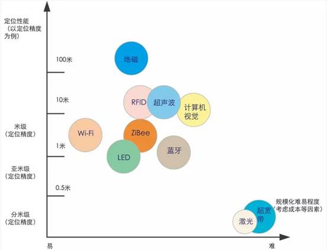
图1 各种室内定位方案的对比图
(一)局域室内定位技术
（1）WIFI技术
基于Wi-Fi的室内定位系统目前主要有两类：第一类是Wi-Fi无线AP(Access Point)区间定位，通过收集Wi-Fi无线AP安装位置，和定位台接收到的AP地址，实现基于Wi-Fi无线AP区间定位，如美国Google Map。基于AP位置的定位技术成本低，但由于AP自身的位置并不精确，不能精确计算用户距AP的距离，定位误差通常达10～20米；第二类则采用Wi-Fi无线信号RSSI(Received Signal Strength Indicator)指纹匹配定位技术，如图2所示。利用该类技术需要建立相关指纹数据库，对数据库的运行维护要求高，定位精度受信号强度影响大，仅适合于重点场所的局部定位应用。
目前，WIFI技术应用于小范围的室内定位，成本较低。但无论是用于室内还是室外定位，Wi-Fi收发器都只能覆盖半径90米以内的区域，而且很容易受到其他信号的干扰，从而影响其精度，定位器的能耗也较高。
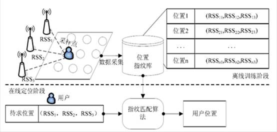
图2基于RSSI指纹匹配的WIFI定位
传统的利用接收信号强度的WIFI 定位方法受到诸多限制，容易受到环境等因素的影响,精度难以有效提升,也无法展开大规模的应用。信道状态信息(channel state information,CSI)是一种比接收信号强度更能描述WIFI信号传播本质的观测量,利用 CSI进行的室内定位研究已得到越来越多的关注。CSI为WIFI信号在室内定位领域的技术研究开辟了新的道路,相比于传统的 RSSI或者其他通过改进软硬件的定位方式,基于 CSI的定位方法更加灵活且不会改变现有的网络或者通讯结构,拥有大规模应用的潜力,满足 LBS的技术要求[101]。
（2）紫蜂(ZigBee)技术
蜜蜂在发现花丛后会通过一种特殊的肢体语言来告知同伴新发现的食物源位置等信息，这种肢体语言就是ZigZag行舞蹈，是蜜蜂之间一种简单传达信息的方式。借此意义Zigbee作为新一代无线通讯技术的命名。
ZigBee技术是一种近距离、低复杂度、低功耗、低速率、低成本的双向无线通讯技术，主要用于距离短、功耗低且传输速率不高的各种电子设备之间进行数据传输。它类似WIFI技术，也可以用于室内定位。它有自己的无线电标准，在可多到65000个无线数传模块之间相互协调通信以实现定位。这些传感器只需要很少的能量，以接力的方式通过无线电波将数据从一个传感器传到另一个传感器，所以它们的通信效率非常高。ZigBee最显著的技术特点是它的低功耗和低成本。它的精度可达3米，但由于信号强度受环境影响较大，如人员走动、墙体/门的遮挡反射等均会导致定位精度下降。
（3）蓝牙技术（Bluetooth）
蓝牙技术通过测量信号强度进行定位。这是一种短距离低功耗的无线传输技术，在室内安装适当的蓝牙局域网接入点，把网络配置成基于多用户的基础网络连接模式，并保证蓝牙局域网接入点始终是这个微微网(piconet)的主设备，就可以获得用户的位置信息，如下图3所示。
蓝牙室内定位技术最大的优点是设备体积小、易于集成在 PDA、PC以及手机中，因此很容易推广普及。理论上，对于持有集成了蓝牙功能移动终端设备的用户，只要设备的蓝牙功能开启，蓝牙室内定位系统就能够对其进行位置判断。采用该技术作室内短距离定位时容易发现设备且信号传输不受视距的影响，主要应用于小范围定位，例如单层大厅或仓库。其不足在于蓝牙器件和设备的价格比较昂贵，而且对于复杂的空间环境，蓝牙系统的稳定性稍差，受噪声信号干扰大。
值得一提的是，苹果公司Apple于2013年9月发布的一种基于低功耗蓝牙的通信协iBeacon。 其工作方式是，配备有iBeacon协议的低功耗蓝牙设备向周围发送自己特有的ID，接收到该ID的应用软件会根据该ID采取一些行动。(注:以下提到的iBeacon是指配备有iBeacon通信协议的设备) 比如，在鞋子上贴一颗iBeacon，当用户靠近鞋子的时候手机上就可以收到iBeacon推送的鞋子信息以及优惠等。
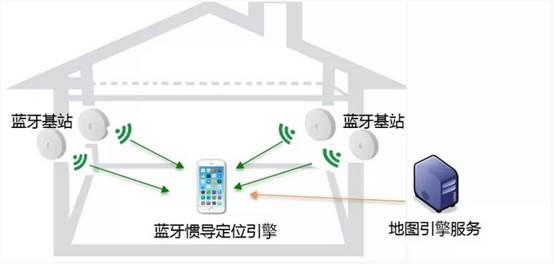
图 3 蓝牙定位
（4）射频识别技术（RFID，radio-frequency identification）
射频识别技术利用射频方式进行非接触式双向通信交换数据以达到识别和定位的目的。比如，通过一组固定的阅读器读取目标RFID标签的特征信息（如身份ID、接收信号强度等）。这种技术作用距离短，一般最长为几十米。但它可以在几毫秒内得到厘米级定位精度的信息，且传输范围很大，成本较低。同时由于其非接触和非视距等优点，可望成为优选的室内定位技术。基于RFID的定位系统目前主要有两类：第一类采用门禁方式进行区间定位；第二类则根据RFID标签的信号强度及已知的RFID标签位置比较进行实时定位，如下图4所示。
目前，射频识别研究的热点和难点在于理论传播模型的建立、用户的安全隐私和国际标准化等问题。优点是标识的体积比较小，造价比较低，但是作用距离近，不具有通信能力，而且不便于整合到其他系统之中，无法做到精准定位，布设读卡器和天线需要有大量的工程实践经验难度大。
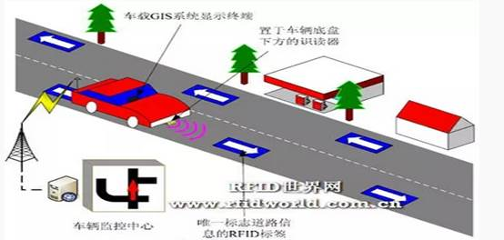
图 4 RFID定位
（5）超宽带定位技术（UWB，ultra-wide band）
超宽带（UWB）定位技术利用事先布置好的已知位置的锚节点和桥节点，与新加入的盲节点进行通讯，并利用三角定位或者“指纹”定位方式来确定位置，如下图5所示。它是一种全新的、与传统通信技术有极大差异的通信新技术。它不需要使用传统通信体制中的载波，而是通过发送和接收具有纳秒或纳秒级以下的极窄脉冲来传输数据，从而具有GHz量级的带宽。超宽带可用于室内精确定位，例如战场士兵的位置发现、机器人运动跟踪等。
超宽带系统与传统的窄带系统相比，具有穿透力强、功耗低、抗多径效果好、安全性高、系统复杂度低、能提供精确定位精度等优点。因此，超宽带技术可以应用于室内静止或者移动物体以及人的定位跟踪与导航，且能提供十分精确的定位精度。
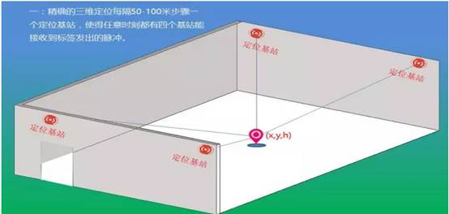
图 5 UWB定位技术
（6）惯性单元(IMU)的辅助定位技术
目前在行人定位导航中应用的惯性导航方法是行人航迹推算（Pedestrian Dead Reckoning，PDR），其基本思想：利用人员行走过程中加速度的周期性变化，基于加速度计进行人员步频探测；利用行人步长估计模型，基于步行中的加速度特性进行步长估计；利用IMU计算航向角；结合人员的步频、步长与航向角，进行航迹推算，如下图6所示。
随着微机电系统（Micro-Electro-Mechanic System，MEMS）技术的普及，各类MEMS传感器开始得到广泛应用。目前的手机大多已配置电子罗盘与加速度计传感器，如果能充分利用手机中的电子罗盘与加速度计，组成惯性测量单元（IMU，Inertial Measurement Unit），融合无线定位系统，将有效提高室内定位精度以及鲁棒性，而且可以降低用于提高室内定位系统信号覆盖所需要的成本。
基于惯性单元的辅助定位技术具有空间分辨率高的特点，可感知终端亚米级的移动。但该技术必须要有一个已知位置的起点，在此基础上进行位置推算，且误差会随运动过程而逐渐累加。因此，除极少数特殊应用场景外，该技术并不单独使用，而是作为其它定位技术的辅助手段，用以提升系统定位精度，并可在小范围的定位信号盲区实现定位无缝过渡。
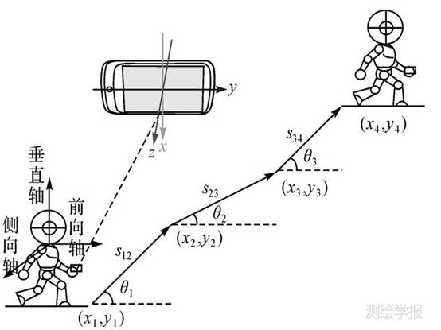
图 6 PDR定位示意图
（7）超声波定位技术(ultrasound)
超声波测距主要采用反射式测距法，通过三角定位等算法确定物体的位置，即发射超声波并接收由被测物产生的回波，根据回波与发射波的时间差计算出待测距离，有的则采用单向测距法。超声波定位系统可由若干个应答器和一个主测距器组成，主测距器放置在被测物体上，在微机指令信号的作用下向位置固定的应答器发射同频率的无线电信号，应答器在收到无线电信号后同时向主测距器发射超声波信号，得到主测距器与各个应答器之间的距离。当同时有3个或3个以上不在同一直线上的应答器做出回应时，可以根据相关计算确定出被测物体所在的二维坐标系下的位置，如下图7所示。
目前，比较流行的基于超声波室内定位的技术还有两种：一种为将超声波与射频技术结合进行定位。由于射频信号传输速率接近光速，远高于射频速率，那么可以利用射频信号先激活电子标签而后使其接收超声波信号，利用时间差的方法测距。这种技术成本低，功耗小，精度高。另一种为多超声波定位技术。该技术采用全局定位，可在移动机器人身上4个朝向安装4个超声波传感器，将待定位空间分区，由超声波传感器测距形成坐标，总体把握数据，抗干扰性强，精度高，而且可以解决机器人迷路问题。
超声波定位整体定位精度较高，结构简单，但超声波受多径效应和非视距传播影响很大，同时需要大量的底层硬件设施投资，成本太高。
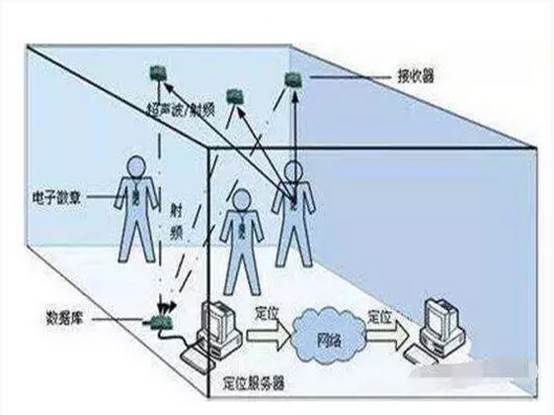
图 7 超声波定位示意图
（8）红外线室内定位技术(IR，infrared)
红外线是一种波长在无线电波和可见光波之间的电磁波。红外定位主要有两种具体实现方法，一种是将定位对象附上一个会发射红外线的电子标签，通过室内安放的多个红外传感器测量信号源的距离或角度，从而计算出对象所在的位置。
这种方法在空旷的室内容易实现较高精度，可实现对红外辐射源的被动定位，但红外很容易被障碍物遮挡，传输距离也不长，因此需要大量密集部署传感器，造成较高的硬件和施工成本。此外红外易受热源、灯光等干扰，造成定位精度和准确度下降。该技术目前主要用于军事上对飞行器、坦克、导弹等红外辐射源的被动定位，此外也用于室内自走机器人的位置定位。
另一种红外定位的方法是红外织网，即通过多对发射器和接收器织成的红外线网覆盖待测空间，直接对运动目标进行定位，如下图8所示。
这种方式的优势在于不需要定位对象携带任何终端或标签，隐蔽性强，常用于安防领域。劣势在于要实现精度较高的定位需要部署大量红外接收和发射器，成本非常高，因此只有高等级的安防才会采用此技术。

图 8 红外线定位示意图
（9）LED可见光技术
可见光是一个新兴领域，通过对每个LED灯进行编码，将ID调制在灯光上，灯会不断发射自己的ID，通过利用手机的前置摄像头来识别这些编码。利用所获取的识别信息在地图数据库中确定对应的位置信息，完成定位，如下图9所示。
根据灯光到达的角度进一步细化定位的结果，高通公司做到了厘米级定位精度。由于不需要额外部署基础设施，终端数量的扩大对性能没有任何的影响，并且可以达到一个非常高的精度，该技术被高通公司所看好。
目前，可见光技术在北美有很多商场已经在部署。用户下载应用后，到达商场里的某一个货架，通过检测货架周围的灯光即可知晓具体位置，商家在通过这样的方法向消费者推动商品的折扣等信息。
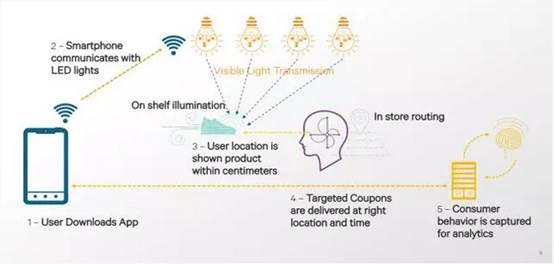
图 9 可见光定位示意图
（10）地磁定位技术
地球可视为一个磁偶极，其中一极位在地理北极附近，另一极位在地理南极附近。地磁场包括基本磁场和变化磁场两个部分。基本磁场是地磁场的主要部分，起源于地球内部，比较稳定，属于静磁场部分。变化磁场包括地磁场的各种短期变化，主要起源于地球内部，相对比较微弱。
现代建筑的钢筋混凝土结构会在局部范围内对地磁产生扰乱，指南针可能也会因此受到影响。原则上来说，非均匀的磁场环境会因其路径不同产生不同的磁场观测结果。而这种被称为 IndoorAtlas的定位技术，正是利用地磁在室内的这种变化进行室内导航，并且导航精度已经可以达到 0.1 米到 2 米。
不过使用这种技术进行导航的过程还是稍显麻烦。你需要先将室内楼层平面图上传到 IndoorAtlas 提供的地图云中，然后你需要使用其移动客户端实地记录目标地点不同方位的地磁场。记录的地磁数据都会被客户端上传至云端，这样其它人才能利用已记录过的地磁进行精确室内导航。
百度于2014年战略投资了地磁定位技术开发商IndoorAtlas，并于2015年6月宣布在自己的地图应用中使用其地磁定位技术，将该技术与Wi-Fi热点地图、惯性导航技术联合使用。精度高， 宣传商业应用中，可以达到米级定位标准，但磁信号容易受到环境中不断变化的电、磁信号源干扰，定位结果不稳定，精度会受影响。
（11）视觉定位SLAM
即时定位与地图构建（Simultaneous Localization And Mapping）指的是机器人在自身位置不确定的条件下，在完全未知环境中创建地图，同时利用地图进行自主定位和导航。
一般来讲，SLAM系统通常都包含多种传感器和多种功能模块。而按照核心的功能模块来区分，目前常见的机器人SLAM系统一般具有两种形式：基于激光雷达的SLAM(激光SLAM)和基于视觉的SLAM(Visual SLAM或VSLAM)。
激光SLAM脱胎于早期的基于测距的定位方法(如超声和红外单点测距)。激光雷达(Light Detection And Ranging)的出现和普及使得测量更快更准，信息更丰富。激光雷达采集到的物体信息呈现出一系列分散的、具有准确角度和距离信息的点，被称为点云。通常，激光SLAM系统通过对不同时刻两片点云的匹配与比对，计算激光雷达相对运动的距离和姿态的改变，也就完成了对机器人自身的定位。
激光雷达距离测量比较准确，误差模型简单，在强光直射以外的环境中运行稳定，点云的处理也比较容易。同时，点云信息本身包含直接的几何关系，使得机器人的路径规划和导航变得直观。激光SLAM理论研究也相对成熟，落地产品更丰富。
眼睛是人类获取外界信息的主要来源。视觉SLAM也具有类似特点，它可以从环境中获取海量的、富于冗余的纹理信息，拥有超强的场景辨识能力。VSLAM的优点是它所利用的丰富纹理信息。例如两块尺寸相同内容却不同的广告牌，基于点云的激光SLAM算法无法区别他们，而视觉则可以轻易分辨。这带来了重定位、场景分类上无可比拟的巨大优势。同时，视觉信息可以较为容易的被用来跟踪和预测场景中的动态目标，如行人、车辆等，对于在复杂动态场景中的应用这是至关重要的。第三，视觉的投影模型理论上可以让无限远处的物体都进入视觉画面中，在合理的配置下(如长基线的双目相机)可以进行很大尺度场景的定位与地图构建。
谷歌公司在2017年度创新大会（Google I/O 2017）上发布的VPS本质就是视觉SLAM，它是一套新型的图像认知和机器学习系统，需要在谷歌的人工智能终端Tango上安装相应的软件和数据，其中手机硬件上使用双目摄像头，软件采用类似Visual SLAM的算法。
 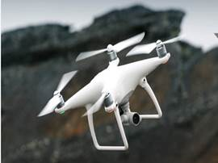
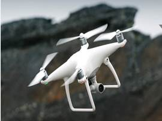
图 10 激光SLAM（左）和视觉SLAM（右）
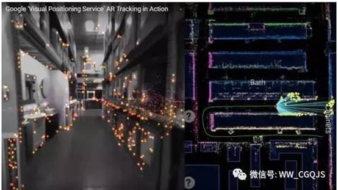
图11 Google VPS生成点云示意图
上述十一种定位技术的优缺点有下表4。
表4. 基于无线局域网的室内定位技术的优缺点
技术 |
定位方法 |
优点 |
缺点 |
代表公司 |
WIFI |
区间定位/RSSI |
易于安装，需要很少基站，系统总精度高 |
只能覆盖半径90米以内的区域；容易受到其他信号的干扰，从而影响其精度；定位器的能耗也较高 |
WIFISLAM、Sensewhere、图聚智能 |
Zigbee |
RSSI |
低功耗和低成本，可靠性高 |
信号强度受环境影响较大 |
/ |
Bluetooth |
RSSI |
设备体积小、易于集成在 PDA、PC以及手机中，很容易推广普及；信号传输不受视距的影响 |
蓝牙器件和设备的价格比较昂贵；对于复杂的空间环境，蓝牙系统的稳定性稍差，受噪声信号干扰大 |
Estimote、寻息电子 |
RFID |
区间定位/RSSI |
可以在几毫秒内得到厘米级定位精度的信息；传输范围很大；成本较低；非接触和非视距 |
作用距离近；不具有通信能力，不便于整合到其他系统之中；无法进行实时定位 |
/ |
UWB |
TOA/TDOA/AOA |
穿透力强、功耗低、抗多径效果好、安全性高、系统复杂度低、能提供精确定位精度 |
作用距离在10米量级，难以实现大范围室内定位 |
Ubisense、联睿电子 |
惯性单元(IMU)的辅助定位技术 |
基于行人航迹推算 |
空间分辨率高；能实现小范围信号盲区定位；能感知终端亚米级的移动 |
误差累积 |
/ |
超声波定位技术 |
TOA/TDOA/AOA |
整体定位精度较高，结构简单 |
受多径效应和非视距传播影响很大；需要大量的底层硬件设施投资，成本太高 |
Shopkick |
红外线室内定位技术 |
TOA/TDOA/AOA |
具有相对较高的室内定位精度 |
不能穿过障碍物，需要直线视距；传输距离较短 |
/ |
LED可见光 |
几何 |
不需要额外部署基础设施 |
光源布置与码间存在干扰 |
华策光通信 |
地磁定位技术 |
RSSI |
不依赖额外设备，成本低 |
需要前期采集地磁信息，稳定性差 |
IndoorAtlas、识途科技 |
视觉定位 |
场景分析/图像处理 |
环境依赖性低 |
成本较高，稳定性低 |
Google、Velodyne、思岚科技、北醒光子 |
(二)广域室内定位技术
（1）辅助GNSS A-GNSS技术[102,103]
辅助-GNSS（A-GNSS或者A-GPS），又称为网络增强系统，是利用普通的移动通信网络，传送增强改正数据。辅助-GNSS，实际上就是利用GNSS或者GPS系统以外的无线电（通信）系统，提供信息协助，加强或者加快卫星导航信号的搜索跟踪性能与速度，使得用户获得更好的应用服务体验。用户的GNSS接收机，仍然需要接收导航卫星信号进行定位，但是与没有辅助信息的情况相比，接收信号的速度更快，而且可以接收处理更加微弱的信号。总之，可以明显缩短接收机首次定位时间，同时可以在受到一定遮挡的情况下，或者半开阔区域，也能实现卫星导航定位。A-GNSS工作的总结框架如下图12所示。
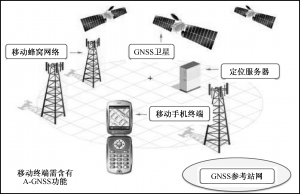
图12.A-GNSS工作的总体框架
A-GNSS中的“A”，表示辅助的含义。所谓辅助，就是为GNSS接收机提供附加的信息，这些额外的附加信息数据由GNSS参考站网接收GNSS信号获得，并且经过处理存入定位服务器，然后根据需要将这些卫星导航信息通过蜂窝移动通信网络，最为常见的是通过蜂窝小区的数据通道，发送给用户终端，协助终端进行卫星信号的搜索捕获跟踪，实现快速定位。所提供的辅助信息，包括导航卫星的历书、星历、频率范围、标准时间和近似位置等。A-GNSS接收机的近似位置通常可以从蜂窝小区基站的位置数据库中获取。
A-GNSS通过提供辅助信息，使GNSS接收机在捕获之前就知道应该捕获的频率范围，然后辅助数据再提供用来计算GNSS用户位置的卫星所在位置。一旦捕获卫星信号后，剩下的工作就是伪距的测量（仅仅需要几毫秒，而不是几分钟），然后A-GNSS接收机开始计算用户的位置。首次定位时间从1分钟或者几分钟量级缩短到1秒量级。此外，由于A-GNSS接收机被设计为预先知道需要搜索哪个频率，接收机的信号搜索跟踪过程就变得较为简单，有针对性地压缩接收机搜索频带，降低噪声带宽，增加信号能量的累计时间，这增加了A-GPS接收机的灵敏度，并允许它捕获更弱的信号。
（2）伪卫星技术[104,105]
伪卫星定位技术 通过卫星信号 生成器和发射器构成的伪卫星进行定位。因此伪卫星 装置相当于位置可以灵活放置的模拟导航卫星，通过发射类似于卫星导航的信号提高局部地区的定位和导航功能。在卫星数过少，或者信号遮挡严重等不利于观测的场合可以通过应用伪卫星定位技术来改善卫星星座结构，从而改善卫星 定位精度；甚至在卫星导航系统不能正常使用的特殊条件下，伪卫星也可以完全代替导航卫星，进行单 独定位导航，实现伪卫星的单独组网布局定位。
早在GPS初期研究阶段，众多学者就已经开始了对伪卫星问题的研究。美国为了验证 GPS系统理论的可行性和进行信号体制实验，搭建了伪卫星Yuma卫星导航测试场。Klein 和Parkinson创新提出了伪卫星可以作为一种辅助工具，在某些对定位精度有特殊要求的场合中增强GPS系统的可用性和几何特性。Parkingson和Fitzgibbon提出并论证了一种距离修正伪卫星设置地点的最优 配置方法。2002年欧盟在德国建成了伽利略试验测试 环 境GATE并通 过6个 地 面 伪 卫 星 发 射Galileo信号，开展了接收机在真实地理信号环境中的定位测试。欧盟针对无缝位置服务市场在Galileo项目中提出了伽利略本地技术计划(GILT)，专门研究室内 外Galileo伪卫 星 在 定 位 方 面 的 应 用。 由LOCATE公司和新南威尔士大学合作研制的Locate伪卫星满足了自动控制、采矿业、港口精密定位、室内定位等领域的自组网用户的定位 需求，水 平 定 位 精 度 可 以 达 到cm级。 此 外 芬 兰 的SPACE SYSTEMS公司为了验证伪卫星在室内环境的定位性能，研究生产了一套基于GPS L1信号的伪卫 星 信 号 发 射 系 统。德 国 的Anchalee Puen-gnim等提出了一种基于伪卫星虚拟同步的高精度定位方案，通过实时差分的方式有效地将定位精度提高到cm级。
在国内方面，随着我国北斗定位产业的迅猛发展，基于 伪 卫 星 的 相 关 技 术 也 受 到 学 者 的 广 泛 关注。尽管发展时间较短，但却得到了很大的进展，如中电54所的伪卫星技术已在战区导航增强、无人机着陆等领域开展了应用，同时部分北斗伪卫星定位产品的应用已成功增强了九寨沟风景区的山 区道路导 航。除 此 之 外 西 北 工 业 大 学、上 海 交 通 大学、武汉大学和哈尔滨工程大学等著名高校对伪卫星定位基础理论展开了研究，其中罗益、魏海涛等对基于伪卫星的GNSS星地时间不同步问题进行了进一步研究，刘超、高井祥等对空间伪卫星优化布局进行了进一步分析研究。
（3）导航通信一体化定位技术[104]
通信系统具有覆盖范围广、稳定性强、普及度高等优点。利用通信系统进行室内定位，可有效解决卫星定位系统室内覆盖差的问题，同时也可有效缩小WIFI等指纹定位系统的建设及维护成本。但通信信号不是为定位设计，为此，提出了用通信导航一体化信号进行定位，即TC-OFDM定位理论。基于该理论，可实现导航信号与第五代移动通信系统信号的一体化定位，受益于5G中采用的毫米波及多入多出(Multiple-Input Multiple Output, MIMO)技术，终端通过接收各个基站的通导一体化信号，通过实时解算，可获得亚米级精度的实时位置信息。利用TC-OFDM系统与其他定位系统的融合，构成羲和导航系统，可实现广域室内外高精度定位的无缝覆盖，如图13所示。该系统具有定位精度高、覆盖性强、成本低等优点，预计将在2020年对我国多个省市实现无缝覆盖。
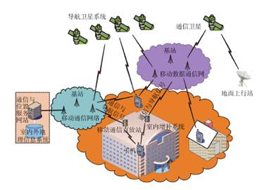
图13. 羲和系统示意图
四、 室内定位系统
目前，基于以上的这些定位方法，针对不同的定位应用，国内外出现了一系列的局域和广域定位系统。以下首先将介绍几种典型的影响较为广泛的局域定位系统、定位原理与可实现的定位精度[6]，然后介绍几种广域的定位系统[18]。更多有关室内定位系统的文献可参见[3，14-16]。
（1）MIT Cricket
Cricket是MIT基于Oxygen项目开发的一套适用于普适计算环境的分布式室内定位系统。该系统依据遍布于墙壁和天花板上的信标节点发射的RF信号和超声波脉冲的时间差进行定位。移动用户携带的监听器一旦接收到RF信号的前几位，便继续监听随后的超声脉冲。当超声脉冲到达时，便根据两个信号传播速度的差异和到达时间差计算出信标与监听器之间的距离，在信标点位置已知的前提下，通过几何测量的方式实现目标的定位。Cricket完全通过软件来实现，且计算过程可在用户端独立运行，中值定位精度在1-3m。然而，该系统需要视距传输(Line of sight，Los)，且信标节点的覆盖范围较小，因而应用范围常常局限于房间内部。
（2）微软 RADAR
微软研究院的RADAR系统是最早出现的基于WLAN的室内定位系统，它从纯软件的角度出发，充分利用现有WLAN设施，通过802.11标准中的接收信号强度指示，实现定位功能。定位过程基于指纹法实现。系统采用确定性匹配算法-K最近邻居(K-Nearest Neighbors， KNN)9进行定位，中值定位精度为2-5m。该系统可在任何具有Wi-Fi适配器的手持终端设备上嵌入，并独立进行定位和追踪，无需额外的硬件支持，且无需视距传输，因而定位范围较Cricket系统广。但由于室内环境的复杂性，如多径、阴影衰落、干扰等，室内电波传播具有较强的时变特性，使得定位的性能受到一定的影响。同时，该系统对指纹库的实时性和准确性要求较高，指纹库的更新工作有待进一步研究。
（3）Ekahau定位系统
Ekahau系统也是基于RSS指纹法的一种定位系统。该系统基于Java软件开发由Ekahau客户端、Ekahau管理端和Ekahan定位引擎三大部分组成，其中定位引擎是整个系统实现定位、追踪的核心。它通过对实际电波传播环境和RSS信号随时间分布的考察，从统计学的角度采用贝叶斯网络来描述整个定位问题。其核心在于根据在线接收信号强度向量获取每个参考点位置的后验概率。Ekahau系统的定位精度较基于确定性算法的RADAR系统有了很大的改进，空间上以每隔3-5m为RSS指纹采样点，中值定位精度可达1-3m。但是，Ekahau系统需要大量的样本采集来确定条件概率密度函数，定位系统的布设时间较长，且计算复杂度较高，因而无法直接嵌入终端设备，而只能在相应的服务器上实现定位和管理。
（4）Intel Place Lab与Skyhook的WPS
与以上三种基于接收信号强度的定位系统不同的是，Intel Place Lab与Skyhook的无线定位系统(wireless Positioning System， WPS)利用研究区域内所有接入点的介质访问控制(Media Access Control， MAC)地址、相应地理位置信息，并结合地图信息进行位置估计。Intel Place Lab通过War-driving的方式利用GPS采集并维护了一个涵盖美国和加拿大城市内150万个接入点信息的中心数据库，包括接入点的MAC地址、服务集标识码(Service Set Identifier， SSID)以及地理位置信息。AP在发射信号的同时，一并将自己的MAC地址进行发送。任何配有Wi-Fi适配器的终端设备，如PDA、智能手机、笔记本电脑等，都可直接下载相应平台支持下的数据库资源，并对所在位置的Wi-Fi信号进行扫描，通过与中心数据库的信息匹配，结合了几何测量法、近似法、场景分析法自行完成定位。skyhook在Boston市区展开了WPS的应用，系统定位精度根据研究区域内AP密度的不同而不同，一般可达20m。该定位系统无需视距传输，且无需像Ekahau系统一样对每个参考点上RSS的时间分布特性进行考察；然而，在对中心数据库的维护和更新工作上，仍存在着极大的挑战
（5）Aero-Scout
Aero-scout系统将一组基于802.11协议的无线接入点作为长距离射频识别(Radio Frequency Identification， RFID)阅读器，并对有源RFID标签信号的飞行时间或RSS进行测量，根据阅读器的位置和三点测量法进行位置估计，中值定位精度在1-5m。系统在建立时，阅读器的位置固定并作为已知，而定位过程在与阅读器相连的位置引擎服务器中实现。
（6）Rosum TV
利用电视信号功率较大、频点较低、频谱范围宽的特点，Rosum-TV系统对来自三个或三个以上的电视信号的到达时间进行测量，辅佐GPS完成室内接收器的定位。但是，由于电视信号为水平信号，因而该系统提供垂直方向位置信息的能力较差，且在室内装备电视信号发射器的前提下，才能提供较为精确的三维定位，中值定位精度可达5m。
上述六种室内定位系统的比较如下表5所示：
表5常见的几种室内定位系统，工作原理和定位精度
|
MIT Cricket |
微软 RADAR |
Ekahau |
Place Lab &Skyhook WPS |
Aero-Scout |
Rosum TV |
部署范围 |
大楼 |
大楼 |
大楼 |
都市 |
大楼 |
都市 |
定位实现 |
移动终端 |
移动终端 |
服务器 |
移动终端 |
服务器 |
移动终端 |
定位算法 |
TOA 三点测量 |
位置指纹 KNN |
位置指纹 概率法 |
地图信息 三点测量 |
TOA 三点测量 |
多边 测量法 |
使用信号 |
RF+超声波 |
802.11 RSS |
802.11 RSS |
802.11 RSS |
RFID/802.11 |
电视信号 |
发送器 |
信标 |
WIFI节点 |
WIFI节点 |
WIFI节点 |
RFID |
电视塔 |
接收器 |
监听器 |
WIFI终端 |
Ekahau终端 |
客户端 |
阅读器 |
Rosum芯片 |
中值精度 |
1-3m |
2-5m |
1-3m |
20m |
1-5m |
5m |
（7）Locata系统
Locata系统是伪卫星定位系统，由澳大利亚GPS生产商Locata公司于2011年推出，利用多个LocataLite实现LocataNet网内纳秒级精度时间同步，并实现定位信号的室内覆盖，室外定位精度达到与GPS相当。但是，在复杂的城市环境中，其信号容易受到遮挡、反射等影响，室内定位精度降低。由于需建设地面伪卫星定位网，成本较高，推广困难，目前未形成大规模商用。
（8）GPSOne定位平台
高通公司的GPSOne定位是一种基于地面移动通信网络辅助GPS定位，又称为辅助GPS（Assistant GPS）定位技术，室外定位精度可达5米，室内定位精度能达到40米，无法满足高精度室内定位的要求。
（9）传统移动基站定位系统
移动通信基站由于地面网络信号覆盖良好，因此可对室内用户进行定位。目前，GSM、CDMA2000、WCDMA、TD-SCDMA等在网运行的系统均具备定位功能，第四代通信系统LTE（Long Term Evolution）也考虑了定位功能，在其Release 9中引入了定位参考信号（PRS，Positioning Reference Signals），用于伪距测量及定位。已有的移动通信基站定位系统包括小区识别码（Cell-ID）定位、环路往返时延（RTD）定位、上行链路信号到达时间(TOA)定位方法、上行链路信号到达时间差（TDOA）方法以及信号到达角度（AOA）定位方法、高级前向链路三角定位（AFLT）、下行链路增强观测时间差定位方法（E-OTD）、下行链路空闲周期观测到达时间差方法（OTDOA-IPDL）等。移动通信基站定位系统较局域室内定位系统成本低、易于普及，现有手机均具有一定程度的定位能力。但目前移动通信基站定位技术由于受非视距及多径干扰大、时间同步精度差等影响，定位精度普遍在百米量级（一般为50～300米），无法实现米级高精度室内定位。
（10）TC-OFDM系统
北京邮电大学等机构在国家863计划支持下研制成功的TC-OFDM系统，基于地面移动通信网，利用地面数量众多、分布在全球区域、网络信号覆盖良好的通信基站，实现广域室内外高精度无缝定位。在北京、天津等地开展了消防救援、平安校园的应用示范，示范系统应用测试表明，系统达到室内定位水平精度优于3米，垂直精度优于1米。
以上4种广域的室内定位系统比较如下表6所示：
表6 广域室内定位系统比较
定位系统 |
定位技术 |
定位精度 |
成本 |
Locata系统 |
伪卫星 |
米级 |
高 |
GPSOne定位平台 |
辅助GPS（地面移动通信网络辅助GPS定位） |
室外5米，室内40米 |
低 |
传统移动基站定位系统 |
移动基站定位 |
50-300米 |
低 |
TC-OFDM系统 |
移动数据通信网 |
3-5米 |
低 |
五、 研究意义
随着现代社会的不断发展，城镇化进程加快，大型建筑日益增多，人们80%以上的时间处于室内环境（含地下、矿井、隧道等）。全球有超50亿手机用户，超10亿的空巢老人和学龄儿童，每年各类灾害（地震、火灾、矿难等）超百万起，餐饮、购物、地铁交通成为人们生活中十分重要的组成部分，这些变化表明人们对室内位置服务的需求正迅速增加。公共安全、生产安全、应急救援、公共卫生、物联网、特殊人群监护、大型场馆管理、智慧城市建设等领域都需要使用准确的室内定位信息。比如在商业应用方面，可以使用室内定位系统进行家庭护理辅助，跟踪老人、小孩，导航盲人；在医院里可以定位特殊的便携式医疗设备；在仓库里可以寻找特定的物品；在超市、购物中心可以帮助人们快速定位所需商品。在公共安全和军事方面可以跟踪监狱中犯人，为警察、消防员和士兵提供大楼内的导航服务。因此，获得精确的室内定位具有非常重要的意义。
六、 国内外研究现状
针对以上难点问题，国内外学者进行了大量的研究工作。主要集中在以下几个方面：一是单个传感器实现的关键技术研究(如WIFI， ZigBee， RFID，LED白光等)；二是多个不同类的传感器间的融合；三是基于时延/信号强度的高精度测距/匹配算法研究；四是传感器信号特性研究；五是结合IMU/GPS等的室内外无缝定位研究。
（1）国内研究现状：
以最近五年国内博士论文研究为例，室内外导航定位的研究分为以下几个方面：一是以无线局域网WLAN技术为代表的室内定位技术关键问题的研究[5-8，17-20]。由于GPS信号到达室内变弱，不能进行定位。因而一方面可以通过伪卫星技术[12]和辅助GPS技术(AGPS) [10]来增强GPS信号，另一方面也可以采用新的信号进行室内定位。现在各大公共场所均配备了WLAN，这使得WLAN室内定位跟踪系统变得非常有吸引力。而且，该室内定位跟踪系统使用信号强度（RSS）进行定位，不进行测距或者测角，所以不需要任何其他的专用硬件，因而WLAN室内定位跟踪系统得到了越来越多的研究人员的关注。文献[5-8，17-20]总体上都是基于上述思路对WLAN室内定位中的关键问题进行了研究。同样，ZigBee，RFID，UWB也是作为新的信号被应用在室内定位中。这三种信号与WLAN的另一个共同点是都可以采用信号强度进行测量，因而成本较低，所以成为室内定位研究的热点。文献[21-22]研究了基于ZigBee技术的位置指纹法，旨在提高其在复杂室内环境下的定位性能和实用性。文献[23]针对射频识别中的LANDMARC算法，提出了四种改进措施，以提高射频识别的定位精度。文献[24-25]针对脉冲超宽带技术的两个主要影响定位精度的多径和非视距问题进行了研究和改进。二是对基于信号强度与距离关系进行位置指纹匹配的定位算法的研究[26-33]。由于接收机信号强度指示(RSSI)可以从移动终端直接获取，而不用像TOA，TDOA，AOA那样需要额外的设备进行测量，因此基于接收机信号强度的测量技术成本低，更适合推广使用，因此这方面的研究较多。但是信号在室内较小的空间内，容易受到多径干扰、非视距误差以及阴影衰落等影响，导致信号强度和距离的关系不是自由衰减，因此一方面需要研究信号的特性以及这种受到干扰的信号强度与传播距离的关系(基于信号衰减的接收机信号强度测量技术)，另一方面位置指纹匹配法由于可以规避这种干扰，因此位置指纹法的研究更具有吸引力（基于位置指纹法的接收机信号强度测量技术）。然而，位置指纹法存在一方面大型室内场所指纹数据库节点数据多，而且需要不定时校正节点信号强度，因而导致工作量大的问题，另一方面移动端接收到的信号强度如何与节点信号强度进行匹配也是算法需要解决的问题。文献[26-33]从定位算法的角度研究了针对包括上述问题在内的影响定位精度的因素的改进措施。三是研究信号发射节点布设的最优分布[33-36]。以位置指纹匹配法为例，移动端接需要接收多个节点处的信号，根据移动端接收到的信号强度通过一定的算法可以计算移动端至最近节点的距离。因此，节点的布设位置关系到移动端能否在任何角落接收到节点发射的信号。所以，在一个大型的室内空间，如大型商场、机场，如何科学合理的布设节点是值得研究的。四是研究机器人的室内自主导航控制[37-41]。五是研究室内时空数据的管理技术[42-43]。
从上述文献所属高校单位来看，哈尔滨工业大学，上海交通大学，天津大学，北京邮电大学在室内定位研究方面取得的成果较多。在国内企业方面，代表性的公司有上海图聚信息技术有限公司(Palmap+)；北京智慧图科技有限责任公司(Rtmap)；华策光通信科技有限公司和北京点道互联科技有限公司(Indoor Maps)。图聚，智慧图和点道根据不同场合，采用蓝牙或者WIFI进行室内定位，而华策光通信科技采用LED的白光通信技术进行室内定位。
（2）国外研究现状：
通过Google Scholar检索刊物“IEEE”最近八年（2010-2018）发表的标题中含有“indoor positioning”的论文，选取前面50被引用次数高的论文进行统计分析。
文献[44-46]是有关室内定位的研究综述，文献[44]阐述了目前室内定位的现状，存在的问题，并从信号特性、数据融合、高精度测距/测信号强度以及室内外无缝定位四个方面指明了室内定位的发展趋势。文献[47-61]研究的是单个传感器室内关键问题的研究，包括光[47，50]，超声波[48，57]，RFID[51，61]，ZigBee[49，52]，WIFI[54，58]，UWB[53]，Smartphone based PDR[55-56]，蓝牙[59]等。文献[44]提到多种传感器融合技术是解决无线信号存在的多路径，易快速衰减及非视距等问题的有效方式之一，因此多传感器融合是目前研究的热点[62-72]。多传感器融合技术能削弱障碍物和干扰源对传感器信号的影响，不能从本质上提高室内定位的精度。为了提高室内定位的精度，需要精确测定观测量的值，在基于TOA，TDOA，AOA测量技术中需要提高时延测定的精度，而在基于RSS测量的技术中一方面需要精确测定RSS的强度，另一方面也需要提高位置指纹匹配的精度，同时减少位置指纹法的工作量。文献[73-85]针对时延/信号强度的高精度测距/匹配算法进行了研究。除此之外，文献[86-92]是对一些室内定位系统，平台的介绍，如澳大利亚的基于伪卫星的Locata系统[87]。最后，文献[93]对如何确定多层建筑的楼层进行了研究。
七、 室内定位面临挑战
和室外定位相比，室内定位面临很多独特的挑战， 比如说室内的环境动态性很强，可以说是多种多样，不同的大厦会有不同的室内布局；室内的环境更加精细，由此也需要更高的精度来分辨不同的特征。
实用的室内定位解决方案都需要满足以下几个方面：精度、覆盖范围、可靠性、成本、功耗、可扩展性和响应时间。
a) 精度：对精度的要求不同的应用差别很大，比如在超市或仓库找一个特定的商品可能需要1米甚至更低的精度，如果在购物中心寻找一个特定的品牌或餐馆，5-10米的精度就能满足要求。
b) 覆盖范围：覆盖范围主要是指一个技术和解决方案可以在多大的范围内提供满足精度的覆盖。有些技术需要相应或专用的基础设施支撑并结合相应的定位终端使用，这样它的覆盖就只是布局了相应技术的环境范围。
c) 可靠性：前面提到室内环境动态性很强，会经常发生改变，比如商场的设置和隔断会经常发生变化。另一方面，定位所依赖的基础设施也会经常发生变化。举个例子，一些大型的会议，参展商会架设自己的WiFi 热点， 这些设施会动态变化位置，甚至有时开有时关，如果定位技术是基于WiFi的，可靠的系统应该不会受到这些因素的影响。
d) 成本和复杂度：成本和复杂度指标涵盖两个方面。一个是定位终端的成本，是不是可以用终端已有的硬件而不添加新的硬件。另一方面是布局和维护的成本及其复杂度，包括布局与维护定位所需要的设施和采集相关的数据库。
e) 功耗：定位所产生的功耗是一个很重要的指标尤其对使用电池的移动设备，如果功耗大很快使设备没电了，就限制了用户的使用。有调查表明，电池消耗过快是很多用户不开启定位功能的一个主要因素。所以，如果要实现随时随地的位置感知，必须降低定位所增加的设备额外功耗。
f) 可扩展性：可扩展性指一个解觉方案扩展到更大的覆盖范围使用的能力，和方便地移植到不同的环境和应用的能力。
g) 响应时间：系统给出一个位置更新所需的时间是响应时间，不同的应用需求不同，比如移动用户和导航应用需要快的位置更新。
由于室内空间复杂的信道环境和空间拓扑关系，给室内定位带来很大的挑战。虽然室内定位源很多，包括声、光、电、场等多种异源异构定位源，但各种定位源都有自身的缺陷和对定位环境的依赖性，使得他们只适用于额定环境和应用时具有一定的局限性。例如WiFi指纹匹配需要足够的信号覆盖；磁场匹配需要显著磁场特征(磁干扰)；视觉定位需要明亮的环境下才能保证高质量成像等。目前还很难找到一种跟室外GNSS技术相似的开机即得的室内定位技术[99]。
目前国际上最流行的室内定位技术是融合GNSS，WiFi，蓝牙、内置传感器和磁场等定位源的任意组合，定位精度在2~5m 之间。在特定环境下，也能达到1m 左右的精度。低成本、高精度和广域覆盖的室内定位技术依然是实现高精度室内外无缝定位的最大障碍。其主要难题在于:
a) 室内空间复杂的信道环境与空间拓扑关系: 对视频信号来讲，信号发射器和接收机间通视是定位的基础。任何遮挡会导致信号强度的迅速衰减或直接阻挡信号的传播。GNSS信号无法穿越厚厚的建筑墙面是一个典型的例子。卫星导航信号从2万多千米的高空，穿越大气层后传到地面，已经很微弱，再加上墙壁或玻璃的遮挡，能进入室内的GNSS信号只能通过高灵敏度接收机接收，其定位精度在几十米或者更差。由于室内空间复杂的拓扑关系，室内空间内部信号遮挡是室内定位常遇到的问题，大大限制了很多室外定位技术在室内普及的可能性，也把有效定位范围限制在很小的范围内，给实现室内定位广域覆盖带来极大的困难。此外，复杂的拓扑空间也导致复杂信号传播环境。大量的反射信号也直接影响到测量精度，从而导致较大的定位误差。复杂的空间拓扑关系从定位精度和可用性两个方面给室内定位带来诸多约束。定位场景信号场的时空变化问题。除了复杂的空间拓扑关系外，室内几何环境和信号环境的时空变化也是维持定位系统的高可持续性的最大障碍(如WiFi基站的增减，室内电器和家具的布设变化，货架货物变化，展览场馆的布设变化等)。如何感知和认知室内几何环境和信号环境的时空变化，提高对定位环境的自学习、自适应能力，实现定位指纹库(包括WiFi指纹库，地磁指纹库等)、图像特征库、地标信息库自动更新，是室内定位领域还没解决的科学问题。
b) 异源异构的定位源:基于智能手机的室内定位源主要包括3大类:卫星定位，短距离射频信号和传感器。卫星定位包括GPS、北斗、Galileo 和GLONASS；短距离射频信号包括WiFi和蓝牙；传感器包括加速度计、磁力计、陀螺仪、气压计、光强度传感器、麦克风、扬声器和相机。个别智能手机还包括深度相机，除了卫星定位接收机以外，所有传感器和射频信号都不是为定位用途而设置的，手机商在选择这些传感器和射频信号时首要考虑的性能不是定位。卫星定位、短距离射频信号和传感器的信号机制和工作原理是完全不同的。他们测量的物理量和测量方法也不一样，测量精度也因源而异。为了得到最优的定位结果，通常需要融合这些异源异构的定位验。在融合这些异源异构的定位源时，面临以下问题
(1)信号测量值同步问题。由于不同定位源的测量过程是独立工作的，不同测量值的采样时间是不一样的。如果位置计算在同一个手机上，可以把所有定位源的观测值都统一到同一时间系统(如手机时间)，通过内差等方法把异源观测量归算到同一观测历元上。如果位置计算在云端服务器上，所有参与定位的手机都必须统一到同一时间基准，比如说网络时。不同手机的异源观测值也必须归算到同一观测历元。前面所述方法只适用于用户在低速运动状态下(运动速度小于2m/s)。在高速运动情况下，要考虑更高精度的
时间同步方法
(2)信号采样频率不一致。比如WiFi信号的采样频率为1/3Hz，而加速度计的采样频率可以达到180Hz。各种定位源的不同采样频率，要求定位算法具备不同历元处理不同数据组合的能力，包括数据掉包情形。室内定位的位置更新率应该大于等于1Hz才能满足大多数位置服务的需求，尤其是跟人流动线相关的应用。
(3)信号测量精度差异问题。低成本传感器容易受环境因素干扰，影响信号测量精度，如运动传感器的测量精度就很差，不能直接用于惯性导航，但可以用于步频探测。有些定位源如蓝牙天线阵列、视觉定位、音频定位等方法可以在局部范围内提供高精度距离、角度或坐标测量值。由于受布设成本的限制，这些高精度测量值不能广域覆盖。这就要求定位算法有足够的灵活性，融合不同观测精度的定位源，让有限的高精度测量值
发挥最大的作用。
(4)不同定位终端测量偏差问题。由于不同定位终端(如手机)硬件上的差异，它们对同一定位源的测量值是存在偏差的。比如不同手机对同一WiFi基站的信号强度(RSSI)测量值是有偏差的，这种偏差虽然不很大，但足以影响定位精度。不同手机的相机参数也不一样，在定位时必须考虑定位终端硬件上的差异，通过定标的方法，消除它们定位的影响。这点对高精度定位(优于1m)尤为重要。
c) 移动终端上有限的计算资源:移动终端的计算资源主要体现在3个方面:有限的计算能力、有限的供电能力和有限的存储能力。随着智能手机的计算性能越来越高，一些复杂的定位算法如视觉定位，粒子滤波等都慢慢出现在室内定位的视野里。由于智能手机是一个多功能的终端，定位功能只能占据小部分的CPU处理时间以保证其他主流功能如打电话、微信、拍照等正常工作。从节能的角度看，不管手机的计算性能有多高，都不可以让智能手机处于连续高速运算状态，否则手机电池很快就耗尽。除此之外，智能手机上的存储能力也有限，不足以运行复杂的定位算法如图像处理和复杂的深度学习算法。
八、 室内定位发展趋势[99]
在谷歌、苹果、百度、华为、阿里巴巴等国际IT巨头的引领下，室内定位已经迈入新的时代。谷歌把室内定位技术VPS(visual positioning service)列为其核心技术，充分彰显室内定位在未来人工智能应用中的重要性。室内定位技术的发展趋势包括如下３个方面:①探索新的定位源，形成高精度、高可用定位技术;②异源异构定位源的高效融合;③基于GIS的语义约束定位和语义认知协同定位。
a) 探索新的定位源，形成高精度、高可用定位技术：
当前，国际上最新的室内定位研究开始探索新的基于视觉、光源信号、音频信号和射频信号的定位技术。苹果致力于推出基于低功耗蓝牙的iBeacon定位技术，谷歌把焦点放在视觉定位上，而百度携手芬兰IndoorAtlas公司聚焦磁场、传感器和iBeacon的融和
当打开智能手机时，能保证无处不在、无时不有的定位源是磁场和手机内置传感器。但是，磁场匹配和传统的运动传感器只能支持2~5m 的定位精度，在物理上不支持更高精度(如分米级)定位方法。因此，必须寻找新的传感器和新的定位源以实现高精度定位，这些传感器包括手机相机、音频传感器、光线传感器和新的射频信号(如5G，BLE5.0)等。
相机是视觉定位的所依赖的传感器，在场景光和图像特征充足的场景下，能够实现分米级甚至厘米级的定位精度。当光学相机影像和深度相机点云组合时(如谷歌的Tango技术)，其定位功能就更加强大。定位时分为两步:图像特征库的建立和相机交会定位。图像特征库的建立需要在定位场景采集大量重叠图像，通过密度匹配和光束平差解算图像特征的物方坐标。图像特征库的建立可一通过事后处理的方法在高性能的云服务器上完成。相机交会定位是通过手机拍摄图像，提取单张图像的特征值，再与图像特征库里的图像特征进行匹配，利用匹配的图像特征点的物方坐标通过交会的形式，确定手机相机的位置和姿态。视觉定位能提供绝对位置，可以与传感器和射频定位技术相融合，提高其可用度。视觉定位的精度虽然很高，但对定位场景的光线要求高，计算量很大，对移动终端的计算性能和存储性能要求高。
音频定位是通过测量声音从音频基站到智能手机的传播距离来确定智能手机的位置的。由于智能手机的音频传感器是为接收和播放音乐而设置的，它的工作频段在0~21kHz左右。一般音乐或人们声音的频率都小于16kHz，所以可以利用16~21kHz这一频段进行定位。定位时音频基站的时钟需要一个同步控制点对定位场景内所 有基站实现同步。由于声音的传播速度只有340.29m/s，时间同步的要求不高。对于分米级的定位精度，同步精度达到0.1ms就可以(等价于3.4cm 的距离测量误差)。
光源编码定位技术是以一个安装在天花板上带开/关扇格的LED 光罩为定位源，通过旋转光罩以及接收开/关扇格在地面的光投影时序模式来确定智能手机的位置。假如光罩被划分为8圈，每圈48格(投影到地面成384扇区)，每圈的编码(开/关)都不一样。通过旋转光罩，使得在每一扇区内的手机记录的光线强度的时间序列测量值的模式不同，判断手机所在扇区。同过特殊编码和信号分析来计算手机在扇区内的相对位置。再通过精确测定手机在扇区内的相对位置，可以在不改变手机硬件的前提下实现5~10cm 定位精度。
在射频信号方面，蓝牙5.0和5G信号将在室内定位方面发挥重要的作用。蓝牙技术具有功耗低、传输速度较快的特点，在消费物联网领域大获成功。蓝牙5.0在通信速度、功耗、通信距离和容量等方面都有显著提高。跟蓝牙4.0比，通信速度提高8倍，而通信距离将提高４倍。所以，单一基站的信号覆盖范围将是目前BLE4.0信号的16倍，这意味着将大大降低定位基站布设成本。在定位精度上也期待着进一步的提高。新一代的蜂窝无线网络如5G已经开始考虑室内定位的功能。如前所述，5G白皮书已明确要求室内外定位 精度优于1m。所以，基于5G的无线定位技术有可能成为未来室内定位的核心技术之一。
下表列举并简单分析了上述几种室内定位前沿技术。受限于室内定位复杂环境影响，上述不同定位技术在定位精度、可靠性、可用性、对基础设施的依赖性等方面各有优缺点，这些高精度定位技术将相互补充
b) 异源异构定位源融合：
目前室内定位领域的技术发展趋势是使用一种可靠的估计方法，将两种以上有互补特性的定位源有效组合，以获得优于单独定位源定位性能，有效提高系统的定位的精度、可用性和抗差能力，形成高可用低成本的室内定位解决方案在异源异构定位源融合方面，需要一个集成硬件标定、单源定位和多源融合定位的完整解决方案，多源定位信息的智能融合方法采用“高精基准控制，紧耦多源融合”的技术路线，以高精度定位技术为控制基准，包含传感器PDR和磁场匹配为纽带，融合声、光、电、场的多源定位技术，采取紧耦合的算法，获得当前位置的最优估计，同时经过适当的滤波处理分析识别定位源中的粗差数据，采用合适的方法(粗差剔除或调整方差矩阵)最小化粗差的影响，获得精确和可靠的定位结果。在定位源充足的情况下，优化定位源的组合，用统计手段，实现多源互检，粗差剔除，确保混合定位解的稳定性和可靠性。
c) 基于GIS的语义约束定位和语义认知协同定位：
GIS领域在“十二五”期间，研究重点已从室外逐步转向室内，但在对室内定位支持较弱，基于GIS的语义约束定位和语义认知协同定位是新的研究方向。室内GIS系统一方面为室内定位技术提供室内地图和特征库提供采集、建模、管理和可视化等基础支撑;另一方面，充分挖掘室内地标潜在价值，提供针对室内位置文字特征的语义定位能力，为其他室内定位技术提供空间约束。然而，由于室内缺少精确的GNSS数据，不能获取精确地采集设备的位置轨迹数据，在测图及建模过程中，存在位置偏移及建模精度偏差的问题。因此，建立对未来高精度智能室内定位系统提供基础支撑室内GIS系统，需要考虑并解决如下关键技术:①建立统一时空基准下的室内GIS数据模型;②建模与定位实时协同的即时室内建模方法;③利用众源数据支持的地图变化发现与更新; ④以视觉定位过程中实时获取的三维场景模型为输入，对定位场景语义计算与认知。
表7 未来室内定位前沿技术的特点和作用
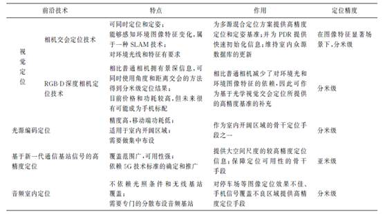
九、 参考文献
[1] http://www.kaer.cn/
[2] 2014年通信导航室内定位行业分析报告
[3] Liu H, Darabi H, Banerjee P, et al. Survey of wireless indoor positioning techniques and systems[J]. Systems, Man, and Cybernetics, Part C: Applications and Reviews, IEEE Transactions on, 2007, 37(6): 1067-1080.
[4] 梁元诚. 基于无线局域网的室内定位技术研究与实现[D]. 四川: 电子科技大学图书馆, 2009.
[5] 张明华. 基于 WLAN 的室内定位技术研究 [D]. 上海交通大学, 2009.
[6] 冯辰. 基于压缩感知的 RSS 室内定位系统的研究与实现[D]. 博士论文, 北京交通大学, 2011.
[7] 室内外高精度定位导航白皮书(2013). 导航与位置服务科技专项总体专家组.2013.9
[8] 赵永翔. 基于无线局域网的室内定位系统研究[D]. 武汉大学, 2010.
[9] 赵锐, 钟榜, 朱祖礼, 等. 室内定位技术及应用综述[J]. 电子科技, 2014, 27(3): 154-157.
[10] Van Diggelen F S T. A-GPS: Assisted GPS, GNSS, and SBAS[M]. Artech House, 2009.
[11] 孙国林.无线移动网络辅助定位算法研究[D].电子科技大学,2005.
[12] Edge L, Jobs G. Centimeter-accuracy indoor navigation using GPS-like pseudolites[J]. 2001.
[13] 万晓光.伪卫星组网定位技术研究[D].上海交通大学,2011.
[14] Mautz R. Overview of current indoor positioning systems[J]. Geodezija ir kartografija, 2009, 35(1): 18-22.
[15] Koyuncu H, Yang S H. A survey of indoor positioning and object locating systems[J]. IJCSNS International Journal of Computer Science and Network Security, 2010, 10(5): 121-128.
[16] Gu Y, Lo A, Niemegeers I. A survey of indoor positioning systems for wireless personal networks[J]. Communications Surveys & Tutorials, IEEE, 2009, 11(1): 13-32.
[17] 倪巍.无线蜂窝网、局域网中定位技术和多址系统研究[D].复旦大学,2005.
[18] 陈丽娜.WLAN位置指纹室内定位关键技术研究[D].华东师范大学,2014.
[19] 张帆.基于WLAN技术的室内定位方法研究[D].中国地质大学,2014.
[20] 孙永亮.基于位置指纹的WLAN室内定位技术研究[D].哈尔滨工业大学,2014.
[21] 王小斌. 基于 WLAN 和 ZigBee 的室内定位技术研究[D]. 辽宁工业大学, 2014.
[22] 李方.基于ZigBee的位置指纹法室内定位技术研究[D].哈尔滨工业大学,2012.
[23] 史伟光.基于射频识别技术的室内定位算法研究[D].天津大学,2012.
[24] 蒙静.基于IR-UWB无线室内定位的机理研究[D].哈尔滨工业大学,2010.
[25] 孙飞.基于低位宽量化的超宽带室内测距与定位方法研究[D].中国科学技术大学,2013.
[26] 张晓平.WSN移动目标的LSSVR回归建模定位理论与算法[D].华南理工大学,2010.
[27] 冯辰.基于压缩感知的RSS室内定位系统的研究与实现[D].北京交通大学,2011.
[28] 王洁.基于贝叶斯估计方法的无线定位跟踪技术研究[D].大连理工大学,2011.
[29] 姜向远.基于最优估计的传感器网络室内无线测距与定位问题研究[D].山东大学,2012.
[30] 戴欢.无线传感器网络定位算法及其应用研究[D].江南大学,2012.
[31] 陈淼.基于信号强度的WLAN室内定位跟踪系统研究[D].武汉大学,2012.
[32] 周牧.室内WLAN距离依赖型匹配定位算法研究[D].哈尔滨工业大学,2012.
[33] 邓志安.基于学习算法的WLAN室内定位技术研究[D].哈尔滨工业大学,2012.
[34] 申兴发.基于无线传感器网络的分布式定位跟踪系统[D].浙江大学,2007.
[35] 周艳.智能空间中定位参考点的优化选择及误差分析[D].东北大学,2009.
[36] 劳达宝.室内测量定位系统发射站优化及校准技术研究[D].天津大学,2011.
[37] 李瑞雪.WSN节点定位算法及其安全性研究[D].吉林大学,2011.
[38] 于清晓.轮式餐厅服务机器人移动定位技术研究[D].上海交通大学,2013.
[39] 刘洞波.移动机器人粒子滤波定位与地图创建方法研究[D].湖南大学,2013.
[40] 王薇.轮式移动机器人的运动控制研究[D].北京邮电大学,2009.
[41] 赵立军.室内服务机器人移动定位技术研究[D].哈尔滨工业大学,2009.
[42] 汪娜.面向室内空间的时空数据管理关键技术研究[D].中国科学技术大学,2014.
[43] 杨彬.室内移动对象的数据管理[D].复旦大学,2010.
[44] Zhongliang D, Yanpei Y, Xie Y, et al. Situation and development tendency of indoor positioning[J]. Communications, China, 2013, 10(3): 42-55.
[45] Mautz R, Tilch S. Survey of optical indoor positioning systems[C]//Indoor Positioning and Indoor Navigation (IPIN), 2011 International Conference on. IEEE, 2011: 1-7.
[46] Rantakokko J, Rydell J, Stromback P, et al. Accurate and reliable soldier and first responder indoor positioning: multisensor systems and cooperative localization[J]. Wireless Communications, IEEE, 2011, 18(2): 10-18.
[47] Kim H S, Kim D R, Yang S H, et al. An indoor visible light communication positioning system using a RF carrier allocation technique[J]. Lightwave Technology, Journal of, 2013, 31(1): 134-144.
[48] Holm S, Nilsen C I C. Robust ultrasonic indoor positioning using transmitter arrays[C]//Indoor Positioning and Indoor Navigation (IPIN), 2010 International Conference on. IEEE, 2010: 1-5.
[49] Kuo W H, Chen Y S, Jen G T, et al. An intelligent positioning approach: RSSI-based indoor and outdoor localization scheme in ZigBee networks[C]//Machine Learning and Cybernetics (ICMLC), 2010 International Conference on. IEEE, 2010, 6: 2754-2759.
[50] Cheok A D, Yue L. A novel light-sensor-based information transmission system for indoor positioning and navigation[J]. Instrumentation and Measurement, IEEE Transactions on, 2011, 60(1): 290-299.
[51] Manzoor F, Huang Y, Menzel K. Passive RFID-based indoor positioning system, an algorithmic approach[C]//RFID-Technology and Applications (RFID-TA), 2010 IEEE International Conference on. IEEE, 2010: 112-117.
[52] Fang S H, Wang C H, Huang T Y, et al. An enhanced ZigBee indoor positioning system with an ensemble approach[J]. Communications Letters, IEEE, 2012, 16(4): 564-567.
[53] Prorok A, Arfire A, Bahr A, et al. Indoor navigation research with the Khepera III mobile robot: An experimental baseline with a case-study on ultra-wideband positioning[C]//Indoor Positioning and Indoor Navigation (IPIN), 2010 International Conference on. IEEE, 2010: 1-9.
[54] Le Dortz N, Gain F, Zetterberg P. WiFi fingerprint indoor positioning system using probability distribution comparison[C]//Acoustics, Speech and Signal Processing (ICASSP), 2012 IEEE International Conference on. IEEE, 2012: 2301-2304.
[55] Pratama A R, Hidayat R. Smartphone-based Pedestrian Dead Reckoning as an indoor positioning system[C]//System Engineering and Technology (ICSET), 2012 International Conference on. IEEE, 2012: 1-6.
[56] Kang W, Nam S, Han Y, et al. Improved heading estimation for smartphone-based indoor positioning systems[C]//Personal Indoor and Mobile Radio Communications (PIMRC), 2012 IEEE 23rd International Symposium on. IEEE, 2012: 2449-2453.
[57] Yazici A, Yayan U, Yucel H. An ultrasonic based indoor positioning system[C]//Innovations in Intelligent Systems and Applications (INISTA), 2011 International Symposium on. IEEE, 2011: 585-589.
[58] Cypriani M, Lassabe F, Canalda P, et al. Wi-Fi-based indoor positioning: Basic techniques, hybrid algorithms and open software platform[C]//Indoor Positioning and Indoor Navigation (IPIN), 2010 International Conference on. IEEE, 2010: 1-10.
[59] Pei L, Chen R, Liu J, et al. Inquiry-based bluetooth indoor positioning via rssi probability distributions[C]//Advances in Satellite and Space Communications (SPACOMM), 2010 Second International Conference on. IEEE, 2010: 151-156.
[60] Koski L, Perala T, Piché R. Indoor positioning using WLAN coverage area estimates[C]//Indoor Positioning and Indoor Navigation (IPIN), 2010 International Conference on. IEEE, 2010: 1-7.
[61] Saad S S, Nakad Z S. A standalone RFID indoor positioning system using passive tags[J]. IEEE Transactions on Industrial Electronics, 2011, 58(5): 1961-1970.
[62] Sun Z, Farley R, Kaleas T, et al. Cortina: Collaborative context-aware indoor positioning employing RSS and RToF techniques[C]//Pervasive Computing and Communications Workshops (PERCOM Workshops), 2011 IEEE International Conference on. IEEE, 2011: 340-343.
[63] Baniukevic A, Jensen C S, Lu H. Hybrid indoor positioning with Wi-Fi and Bluetooth: Architecture and performance[C]//Mobile Data Management (MDM), 2013 IEEE 14th International Conference on. IEEE, 2013, 1: 207-216.
[64] Xiao W, Ni W, Toh Y K. Integrated Wi-Fi fingerprinting and inertial sensing for indoor positioning[C]//Indoor Positioning and Indoor Navigation (IPIN), 2011 International Conference on. IEEE, 2011: 1-6.
[65] Chang N, Rashidzadeh R, Ahmadi M. Robust indoor positioning using differential Wi-Fi access points[J]. Consumer Electronics, IEEE Transactions on, 2010, 56(3): 1860-1867.
[66] Luo Y, Law C L. Indoor positioning using UWB-IR signals in the presence of dense multipath with path overlapping[J]. Wireless Communications, IEEE Transactions on, 2012, 11(10): 3734-3743.
[67] Sundaramurthy M C, Chayapathy S N, Kumar A, et al. Wi-Fi assistance to SUPL-based Assisted-GPS simulators for indoor positioning[C]//Consumer Communications and Networking Conference (CCNC), 2011 IEEE. IEEE, 2011: 918-922.
[68] Rahman M S, Haque M M, Kim K D. High precision indoor positioning using lighting led and image sensor[C]//Computer and Information Technology (ICCIT), 2011 14th International Conference on. IEEE, 2011: 309-314.
[69] Wang C S, Cheng L C. RFID & vision based indoor positioning and identification system[C]//Communication Software and Networks (ICCSN), 2011 IEEE 3rd International Conference on. IEEE, 2011: 506-510.
[70] Fink A, Beikirch H, Voß M, et al. RSSI-based indoor positioning using diversity and Inertial Navigation[C]//Indoor Positioning and Indoor Navigation (IPIN), 2010 International Conference on. IEEE, 2010: 1-7.
[71] Xiong Z, Sottile F, Spirito M A, et al. Hybrid indoor positioning approaches based on WSN and RFID[C]//New Technologies, Mobility and Security (NTMS), 2011 4th IFIP International Conference on. IEEE, 2011: 1-5.
[72] Baniukevic A, Sabonis D, Jensen C S, et al. Improving wi-fi based indoor positioning using bluetooth add-ons[C]//Mobile Data Management (MDM), 2011 12th IEEE International Conference on. IEEE, 2011, 1: 246-255.
[73] Zhao Y, Yang Y, Kyas M. Comparing centralized Kalman Filter schemes for indoor positioning in wireless sensor network[C]//Indoor Positioning and Indoor Navigation (IPIN), 2011 International Conference on. IEEE, 2011: 1-10.
[74] Ding H L, Ng W W Y, Chan P P K, et al. RFID indoor positioning using RBFNN with L-GEM[C]//Machine Learning and Cybernetics (ICMLC), 2010 International Conference on. IEEE, 2010, 3: 1147-1152.
[75] Sharp I, Yu K, Hedley M. On the GDOP and accuracy for indoor positioning[J]. Aerospace and Electronic Systems, IEEE Transactions on, 2012, 48(3): 2032-2051.
[76] Sharp I, Yu K. Enhanced least-squares positioning algorithm for indoor positioning[J]. Mobile Computing, IEEE Transactions on, 2013, 12(8): 1640-1650.
[77] Engelbrecht J, Collmann R, Birkel U, et al. Methodical leaky feeder design for indoor positioning considering multipath environments[C]//Radio and Wireless Symposium (RWS), 2010 IEEE. IEEE, 2010: 164-167.
[78] Walder U, Bernoulli T. Context-adaptive algorithms to improve indoor positioning with inertial sensors[C]//Indoor Positioning and Indoor Navigation (IPIN), 2010 International Conference on. IEEE, 2010: 1-6.
[79] Jung S, Lee C, Han D. Wi-Fi fingerprint-based approaches following log-distance path loss model for indoor positioning[C]//Intelligent Radio for Future Personal Terminals (IMWS-IRFPT), 2011 IEEE MTT-S International Microwave Workshop Series on. IEEE, 2011: 1-2.
[80] Bernardos A M, Casar J R, Tarrío P. Real time calibration for rss indoor positioning systems[C]//Indoor Positioning and Indoor Navigation (IPIN), 2010 International Conference on. IEEE, 2010: 1-7.
[81] Larranaga J, Muguira L, Lopez-Garde J M, et al. An environment adaptive ZigBee-based indoor positioning algorithm[C]//Indoor Positioning and Indoor Navigation (IPIN), 2010 International Conference on. IEEE, 2010: 1-8.
[82] Davidson P, Collin J, Takala J. Application of particle filters for indoor positioning using floor plans[C]//Ubiquitous Positioning Indoor Navigation and Location Based Service (UPINLBS), 2010. IEEE, 2010: 1-4.
[83] Machaj J, Brida P, Piché R. Rank based fingerprinting algorithm for indoor positioning[C]//Indoor Positioning and Indoor Navigation (IPIN), 2011 International Conference on. IEEE, 2011: 1-6.
[84] Subhan F, Hasbullah H, Rozyyev A, et al. Indoor positioning in bluetooth networks using fingerprinting and lateration approach[C]//Information Science and Applications (ICISA), 2011 International Conference on. IEEE, 2011: 1-9.
[85] Feng C, Au W S A, Valaee S, et al. Received-signal-strength-based indoor positioning using compressive sensing[J]. Mobile Computing, IEEE Transactions on, 2012, 11(12): 1983-1993.
[86] Gusenbauer D, Isert C, Krosche J. Self-contained indoor positioning on off-the-shelf mobile devices[C]//Indoor positioning and indoor navigation (IPIN), 2010 international conference on. IEEE, 2010: 1-9.
[87] Rizos C, Roberts G, Barnes J, et al. Experimental results of Locata: A high accuracy indoor positioning system[C]//Indoor Positioning and Indoor Navigation (IPIN), 2010 International Conference on. IEEE, 2010: 1-7.
[88] Laoudias C, Constantinou G, Constantinides M, et al. The airplace indoor positioning platform for android smartphones[C]//Mobile Data Management (MDM), 2012 IEEE 13th International Conference on. IEEE, 2012: 312-315.
[89] Wirola L, Laine T A, Syrjärinne J. Mass-market requirements for indoor positioning and indoor navigation[C]//Indoor Positioning and Indoor Navigation (IPIN), 2010 International Conference on. IEEE, 2010: 1-7.
[90] Huey L C, Sebastian P, Drieberg M. Augmented reality based indoor positioning navigation tool[C]//Open Systems (ICOS), 2011 IEEE Conference on. IEEE, 2011: 256-260.
[91] Gallagher T, Li B, Dempster A G, et al. A sector-based campus-wide indoor positioning system[C]//IEEE International Conference on Indoor Positioning and Indoor Navigation (IPIN10). 2010: 1-8.
[92] Tilch S, Mautz R. Current investigations at the ETH Zurich in optical indoor positioning[C]//Positioning Navigation and Communication (WPNC), 2010 7th Workshop on. IEEE, 2010: 174-178.
[93] Alsehly F, Arslan T, Sevak Z. Indoor positioning with floor determination in multi story buildings[C]//Indoor Positioning and Indoor Navigation (IPIN), 2011 International Conference on. IEEE, 2011: 1-7.
[94] http://www.iot101.com/news/2018-01-17/13945.html
[95] https://www.leiphone.com/news/201709/4sHeWYmxh71IgeaI.html
[96] http://blog.csdn.net/tiandijun/article/details/55212968
[97] https://www.leiphone.com/news/201605/5etiwlnkWnx7x0zb.html
[98] http://imgtec.eetrend.com/blog/10826
[99] 陈锐志,陈亮. 基于智能手机的室内定位技术的发展现状和挑战[J]. 测绘学报, 2017, 46(10).
[100] He, S., & Chan, S. H. G. (2016). Wi-Fi fingerprint-based indoor positioning: Recent advances and comparisons. IEEE Communications Surveys & Tutorials, 18(1), 466-490.
[101] 陈锐志，叶锋．基于 Wi-Fi 信道状态信息的室内定位技术现状综述[J/OL]．武汉大学学报(信息科学版). https://doi.org/10.13203/j.whugis20180176
[102] www.glac.org.cn/index.php?m=content&c=index&a=show&catid=38&id=4553
[103] https://www.qxwz.com/product-service-findnow.html
[104] 邓中亮, 尹露, 唐诗浩,等. 室内定位关键技术综述[J]. 导航定位与授时, 2018.
[105] 裴凌, 刘东辉, 钱久超. 室内定位技术与应用综述[J]. 导航定位与授时, 2017, 4(3).
注：加粗文献为经典文献，可以进一步延伸阅读.